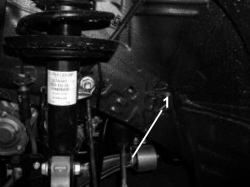

4410BA CHECK FOR SIGNS OF RUBBING ON THE TRACK CONTROL ARM REAR BUSH
- Path
- Test > 44 SUSPENSION AND WHEELS > 4410 FRONT SUSPENSION > 4410B FRONT SUSPENSION TRACK CONTROL ARMS > 4410BA CHECK FOR SIGNS OF RUBBING ON THE TRACK CONTROL ARM REAR BUSH
- Kind
- test / check procedure
- Applies to
- all engines; all production periods
- Interactive page
- https://sloeber94.github.io/elrnDB-fCrm/en/#/194002289
Applies to: all engines; all production periods
Position the vehicle on a two column lift.
Raise the vehicle and check that there are no signs of rubbing on the outside (in the direction of travel) of the rear bush (1) for the track control arm as shown by the arrow.
